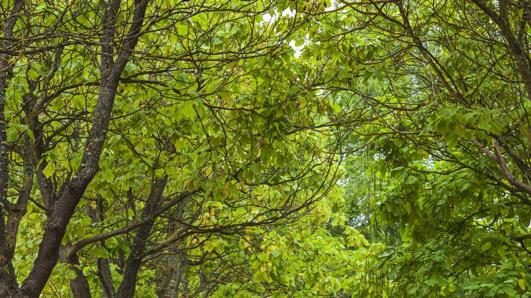

Acerca del vívero
El Vivero Institucional cuenta con más de 4500 plantas de 70 especies de árboles nativos de la región, de las cuales se encuentran reproduciendo actualmente 12 especies maderables, frutales y de ornato. Adicional, en el año 2021 se logró germinar 967 semillas de 7 especies (2021) recolectadas en salidas de campo a diversas partes del Estado y algunos sitios específicos y estratégicos en los Campus pertenecientes a la UADY. Estas especies son: Jícara (Crescentia cujete), Balché (Lonchocarpus longistylus), Kanasin (Lonchocarpus rugosus), Takinche (Caesalpinia yucatanensis), Anacahuite (Cordia sebestena), Pimienta (Pimenta dioica), Mango (Mangifera indica), Guayaba (Psidium guajava) y Naranja (Citrus sinensis).
Objetivo
El objetivo del vivero es realizar la reproducción de plantas nativas para la Reforestación en los Campus, ayudando a reducir los efectos del Cambio Climático y la Conservación de la Biodiversidad de las especies vegetales de la región, en beneficio de la sustentabilidad a través de reproducción de las especies mediante la colecta y rescate de germoplasma nativo para su multiplicación. También aporta un área que sirva como escenario real de aprendizaje dentro del cual se contribuye con la formación de los estudiantes acorde al Modelo Educativo para la Formación Integral, mediante las visitas guiadas que son informativas y descriptivas sobre la importancia de los árboles nativos, mediante cursos y talleres.
Acciones y Logros
El Vivero Institucional cuenta con más de 4500 plantas de 70 especies de árboles nativos de la región, de las cuales se encuentran reproduciendo actualmente 12 especies maderables, frutales y de ornato.
- El Vivero cuenta con más de 5,452 plantas pertenecientes a 96 especies de árboles nativos de Yucatán, tanto maderables, como, ornamentales, frutales y medicinales.
- Entre las plantas que se reproducen en el vivero hay especies de gran valor cultural en la región, como el hule maya (Castilla elastica), la jícara (Crescentia cujete) y el balché (Lonchocarpus longistylus).
- Como resultado del programa de reforestación, se han logrado plantar 1140 especies, durante los últimos 4 años en Facultades de los Campus y en las Escuelas Preparatorias.
- Dentro del Vivero Institucional se han realizado talleres de Cultivos Orgánicos a los estudiantes de diversas Facultades y se colaboró con la asignatura libre “Taller ambiental” de la Facultad de Economía (UADY).
Visítanos
Vísita nuestra sucursal
Calle X #X x X y X
Escríbenos
Para más información
correo@gmail.com
Llámanos
Lun-Vie de 8 am a 5 pm
999 0000000